Photos as
youth
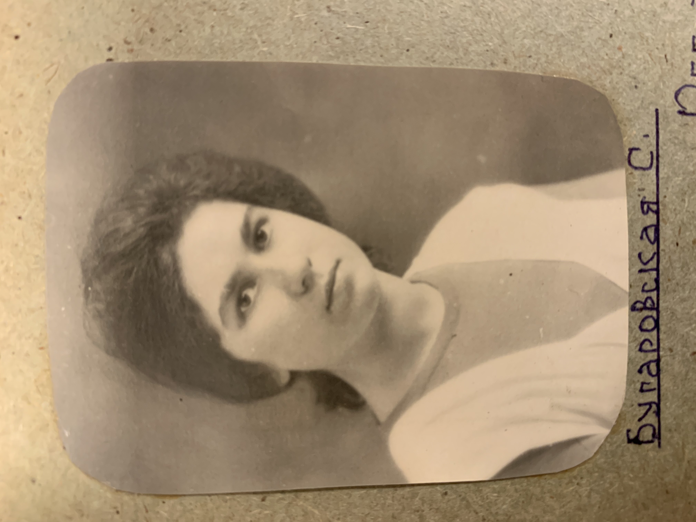
 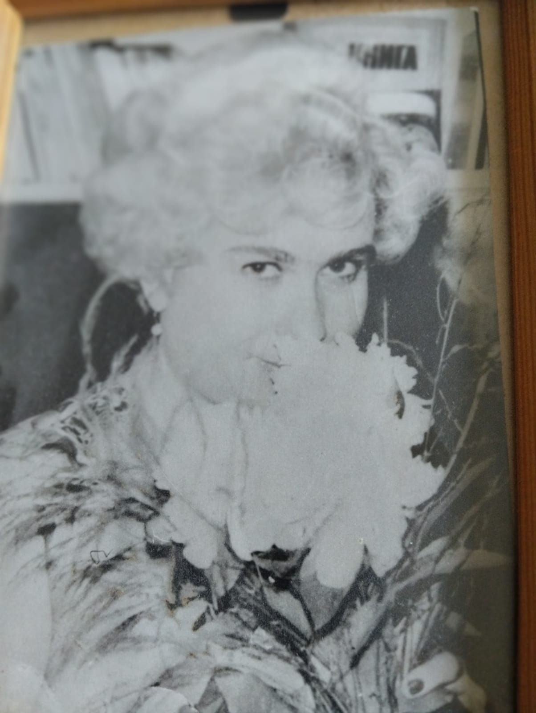
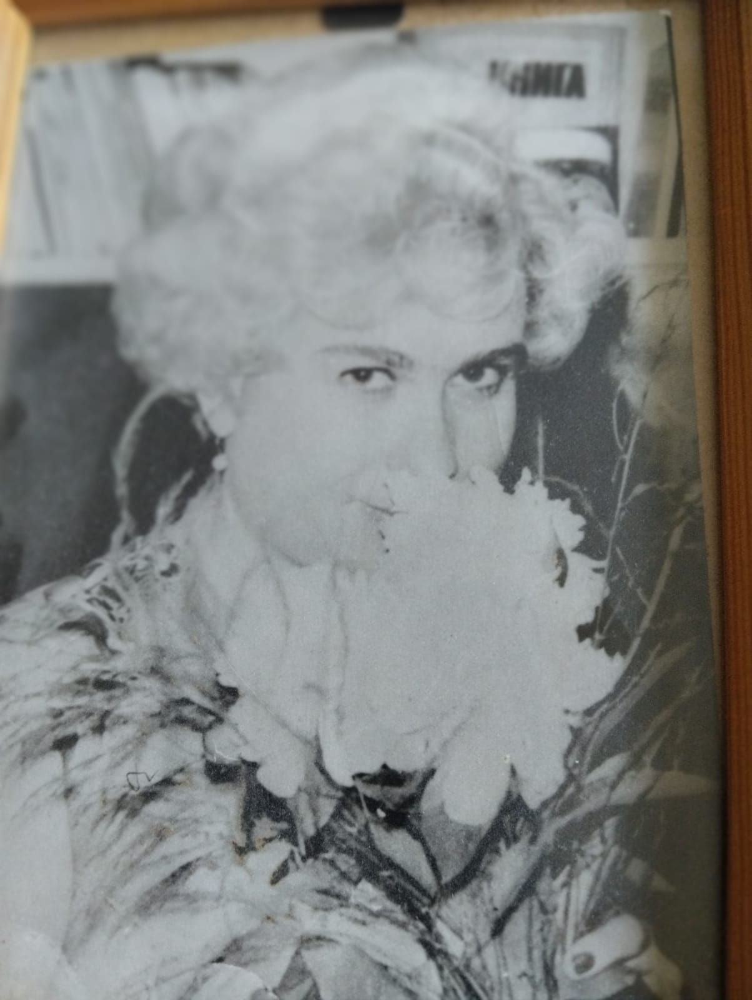
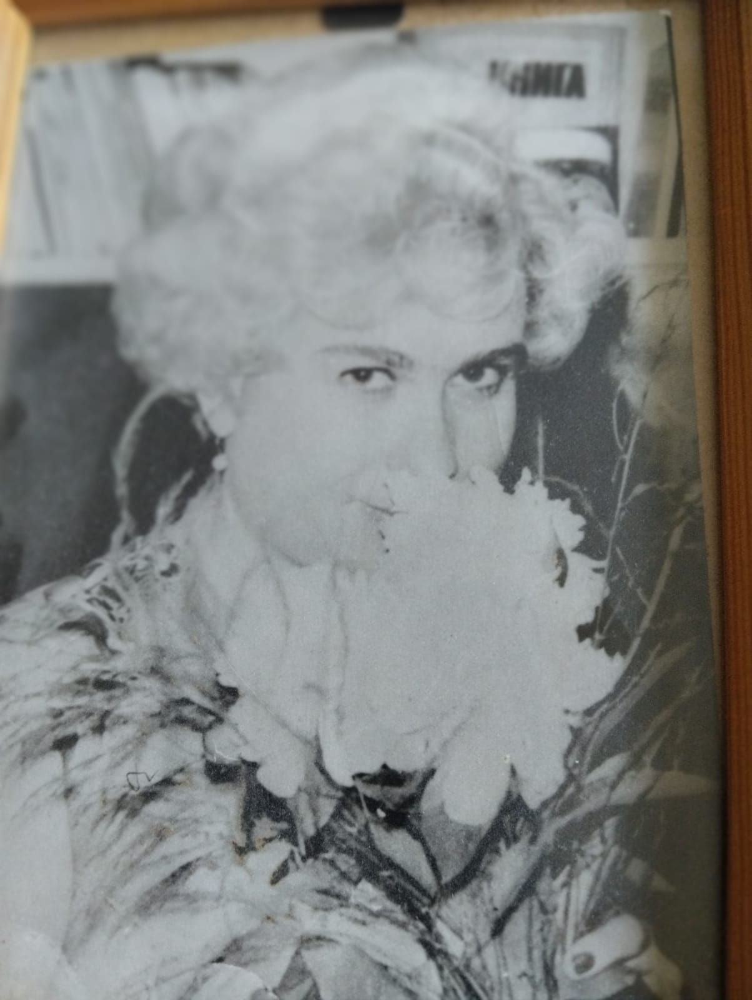
A mother
 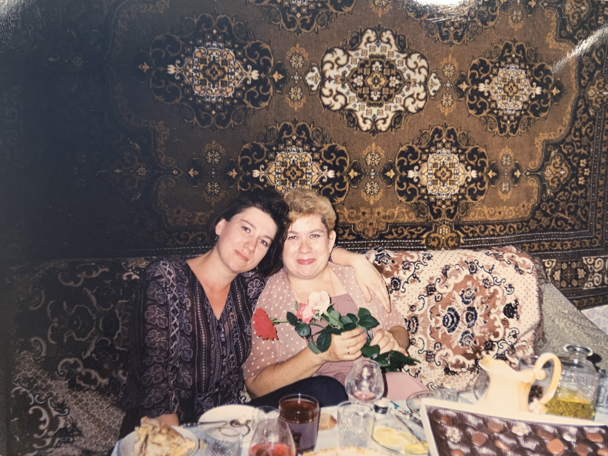
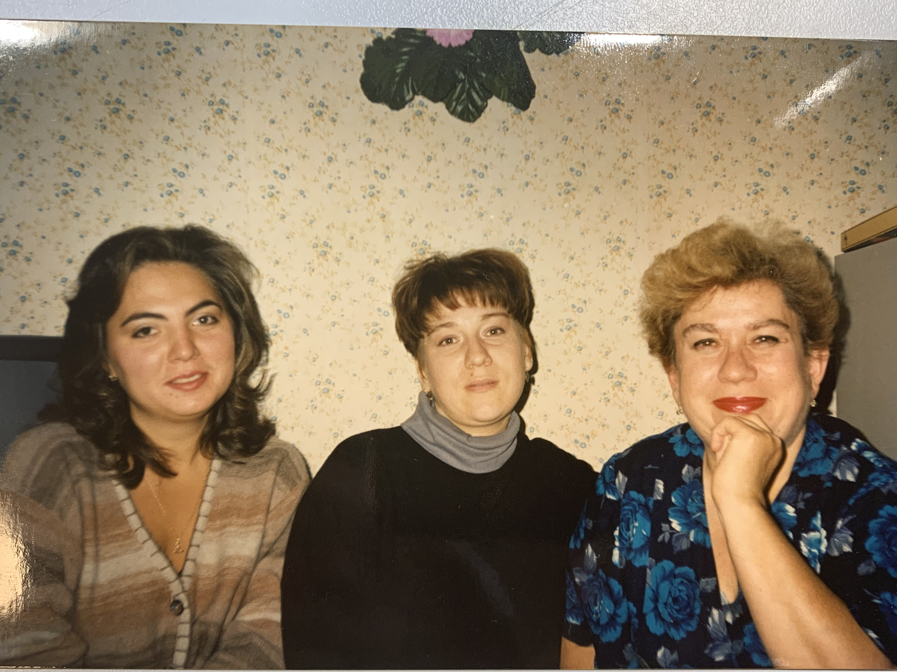
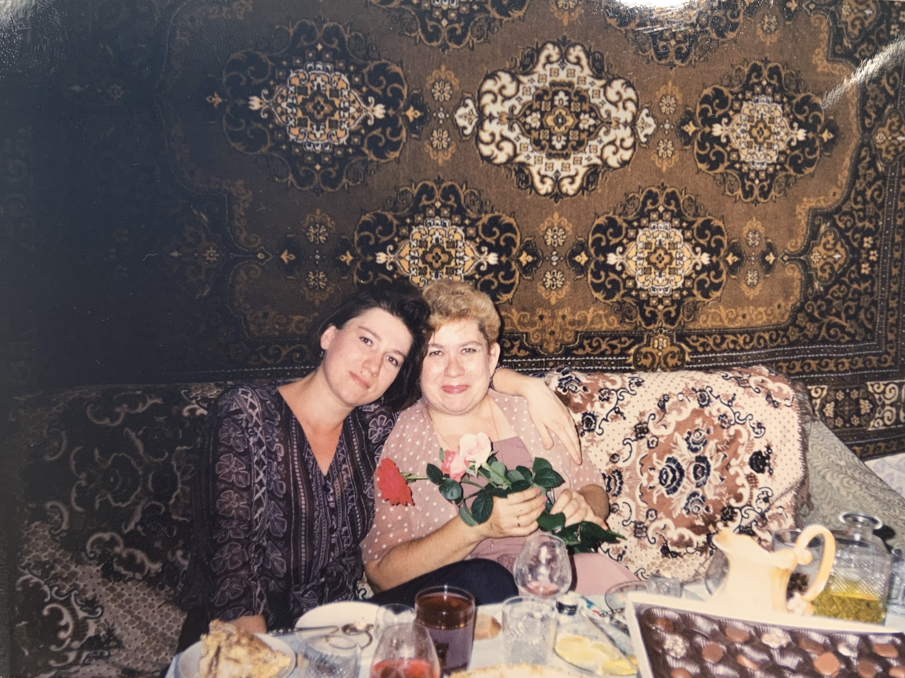
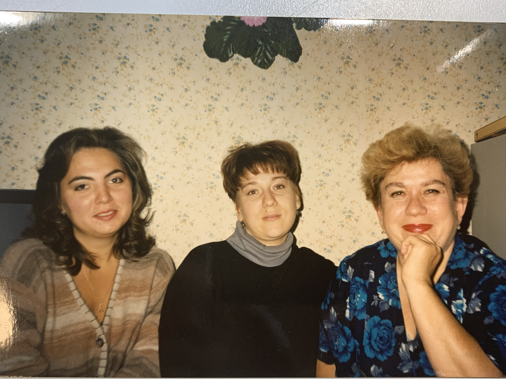
A grandmother
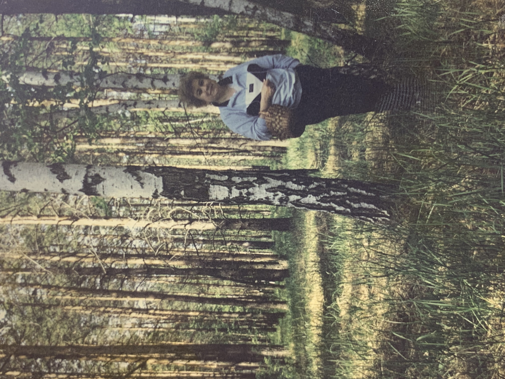
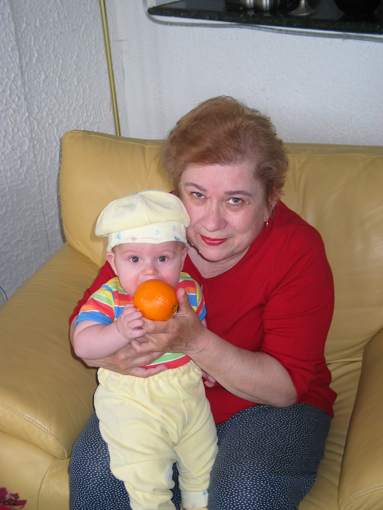
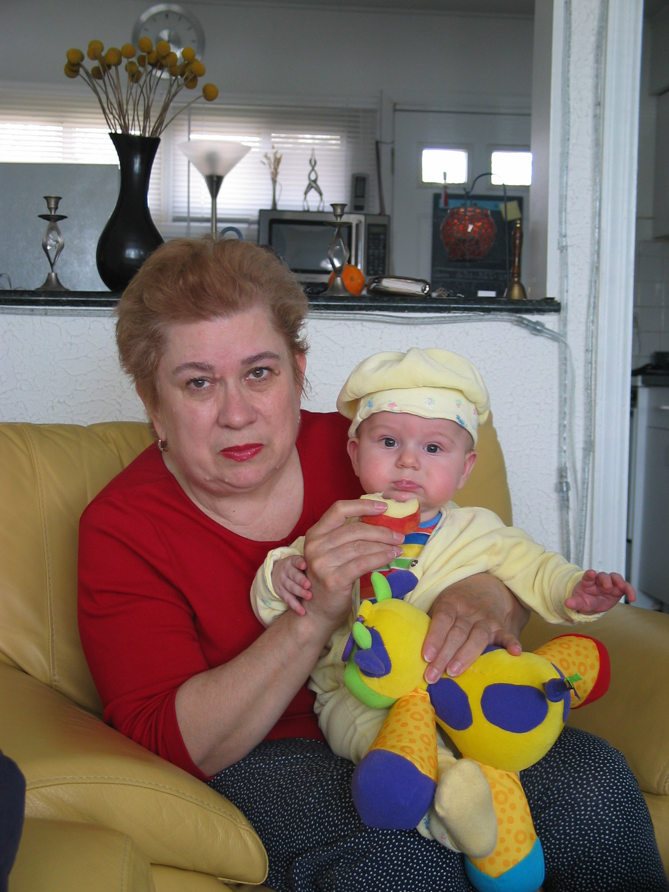
About My grandmother
Childhood:
My grandmother named Svetlana Bogarovskia was born in
15/07/1946 in Estonia, while her father was serving for the country (Russia).
Throughout her childhood her family traveled and
lived in many extreme location across the country due to her farther service.
At the age of 7 her father died, after his death the
family settled in the city Tambov, due to the circumstances my grandmother changed
many schools along the way.
After she finished high school in Tambov she was
accepted to T.G.P.I (Tambov government pedagogic institute) in the
faculty of international languages, she was working in electronics factory at
day time for stable income and learning at the institute at evening/night time.
Her career:
After 5 hard years of work and study Svetlana would
start he carrier path in life, teaching at school number 2 in Tambov as a home
room teacher (educator), after 3 years of teaching she became the vice- principal
of the school.
The school was quite neglected with problematic children,
Svetlana work consisted of levitating the school level and social work (meeting
the families at their home to help the struggling children).
Svetlana recruited a strong and high functioning
teaching stuff, in time many of them climbed their own career ladder, becoming inspectors,
vice principals and educators, partially due to Svetlana initiative and help.
After working as the vice principal Svetlana became
the inspector and director of the education department in the largest urban
area in Tambov, this was one of the breakthrough moments of her career, this brought
hard working times which included creative work with different people from various
aspects of education. Dozens of schools, sport and culture establishments were
under her responsibility, moreover she allocated many time and effort for recruiting
the right personnel in many key positions in order to secure the development
and success of the region, many of the people working under Svetlana were professionals
in their filed with dozens years of experience.
In the year she worked the city was developing in many
aspects, including educational institutes that operate to this day.
From 1981-1983 Svetlana was relocated to work in the
capital of Mongolia as vice-principal of a school in Ulaanbaatar.
After coming back to Russia from Mongolia Svetlana worked
12 year as a vice director of the a big reign in Tambov just like before she
left the work was intense including coloration between people from many aspects
of education and culture.
She also worked as a part time teacher of the English
language.
Then, as the peak of her career, she became the
director of education in the whole region of Tambov, which was much higher
scale of the work she have done in the years prior.
Rewards:
- Was granted a diploma of appreciation for the promotion
of education and outstanding work in the field of education on the behalf of
the government.
- After her work in Mongolia she got diploma for the
successful work in education and culture for her pedagogy skills.
- 1987 granted a medal of excellence in education.
- 1996 got the title of outstanding teacher, recognized
by the Russian federation.
Hobbies:
- Loves traveling and exploring the world and learning different cultures. Been to Italy, France, Bulgaria and comes to Israel every few years.
- Loves reading books, favorite author "Anton Pavlovich Chekhov"
- enjoys culinary.
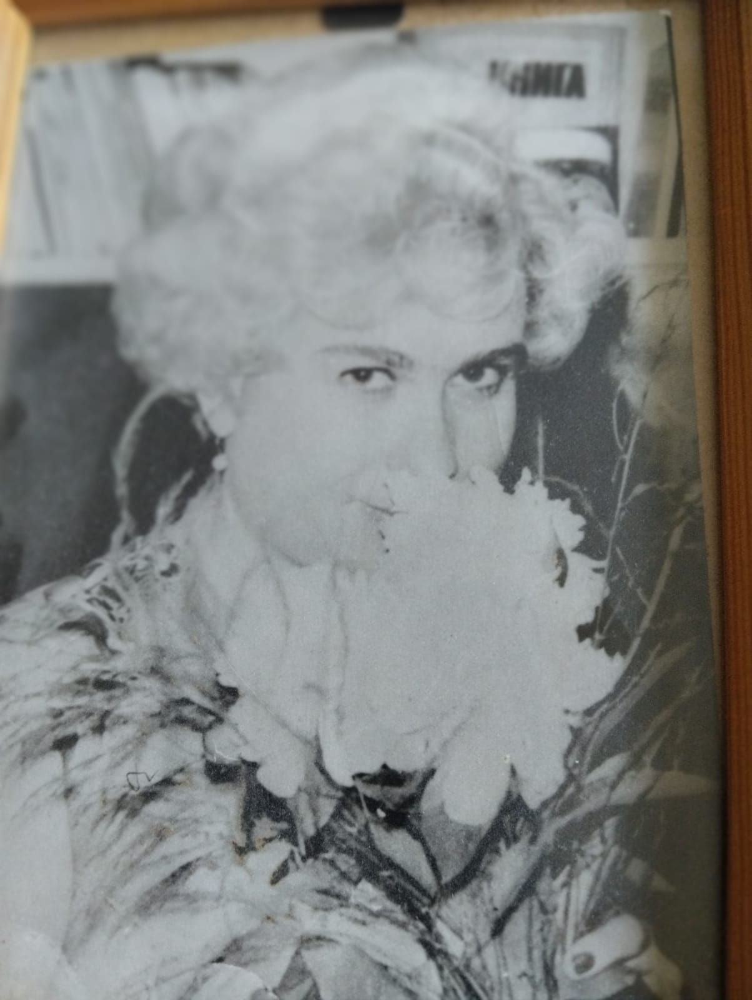
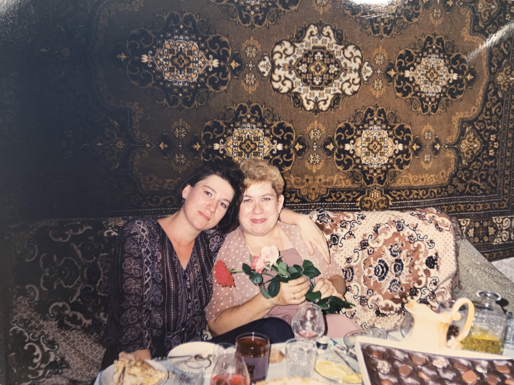
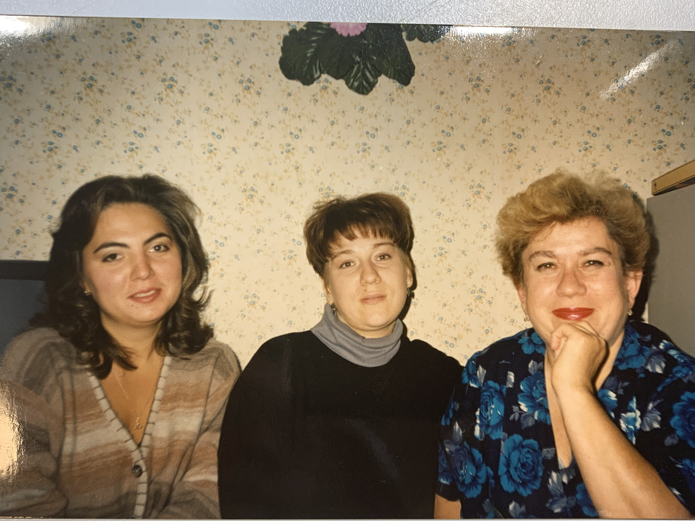
חיפושי של "תופעות לוואי של תרופות"
חיפוש התבצע באופן ידני, על מנת לקרוא על מאמרים\מסמכים בנושא עלינו היה להכניס את הכתובת URL של האתר שרצינו לבקר בו על מנת לצרוך את המידע המבוקש
חיפוש היה בעזרת מנוע חיפוש שהביא לנו מסמכים שקשורים (ככל הנראה מכילים את המילים שחיפשנו) לנושא המבוקש, נוכל גם לקבל פורומים או לחפש ברשתות חברתיות על מנת למצוא מידע על הנושא.
חיפוש יכול להתבצע באופן יחסית דומה לגרסה הקודמת, אך התוצאות יהיו שונות, עם השימוש של בינה מלאכותית התשובות המוחזרות יכול לכלול מידע שרלוונטי שלנו אף על פי שלא הקלדנו בדיוק את מה שהוא מספק, לדוגמא במקרה שלנו הוא יכול לתת מסמך של איך להתנהל בעת תופעת לוואי מהתרופות המוכרות ביותר, הסיבה לכך נובעת מההבנה כי קיים הסיכוי שאנחנו מעוניינים לבדוק מה עלינו לעשות אם אנחנו חשים בתופעות לוואי.